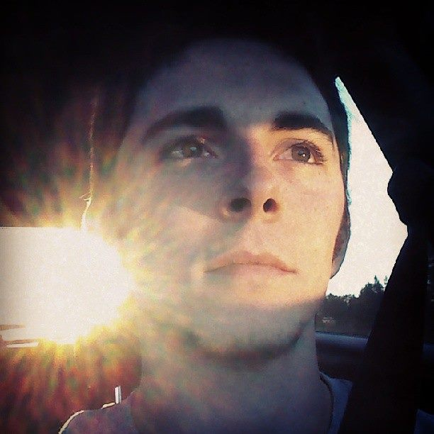

Welcome to my portfolio. Over the past 9 years, I have pursued and succeeded at a career in Media Distribution and enjoyed a position as a Broadcast Systems Engineer with multiple high end Network Including NBC, ABC, NFL Network, Root Sports, Scripps and KATZ Networks. I have been tasked with ensuring the clean and correct playout of all of the networks during high volume events such as the olympics and Thursday Night Football.
My time in Engineering has given me an immense respect for software development and inspired me to pursue a new career to further pursue. I am currently attending the Georgia Tech Coding Bootcamp to assist in that goal and confidentally tackle any problem thrown my way.